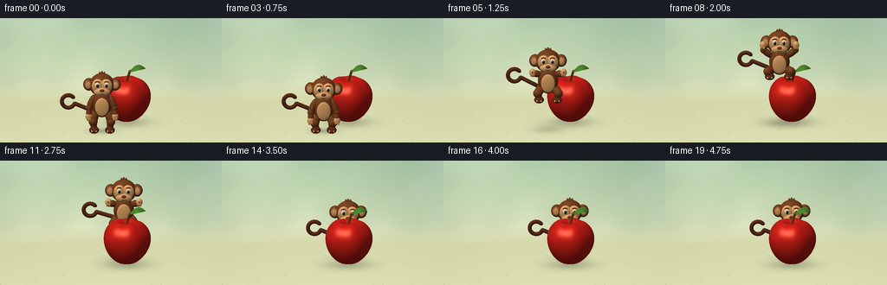
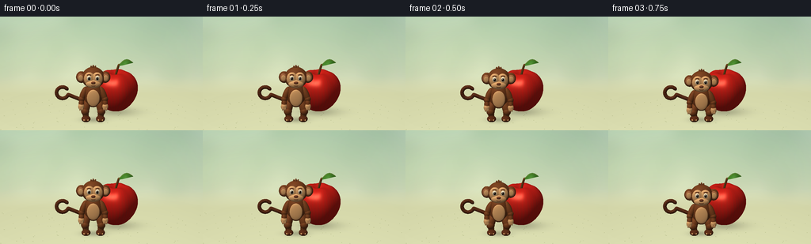

CODING AGENTS AS PIXEL WORLD MODELS
traex/GPT-6.1-Sol · dynamic_spatial_relationship_0062
点击播放 · 原生 RGB 像素
逐轮保存的候选
回放视频、检查图与代码变化。
每份候选均可单独播放。实际图片检查记录在下方工具轨迹中。
候选 01播放与检查图
点击播放 · 原生 RGB 像素


展开代码变化
--- 上一保存版本
+++ 本次保存版本
@@ -0,0 +1,326 @@
+from pathlib import Path
+import math
+import numpy as np
+from PIL import Image, ImageDraw, ImageFilter
+import artifact_io
+
+ROOT=Path(__file__).resolve().parent
+W,H,S=256,144,3
+WW,HH=W*S,H*S
+SCALE=38*S
+E=math.radians(17)
+RIGHT=np.array([1.,0.,0.]); UP=np.array([0.,math.sin(E),math.cos(E)])
+RAY=np.array([0.,math.cos(E),-math.sin(E)])
+LIGHT=np.array([-.48,-.65,1.]); LIGHT/=np.linalg.norm(LIGHT)
+VIEW=-RAY; HALF=(LIGHT+VIEW); HALF/=np.linalg.norm(HALF)
+BG=None
+
+
+def project(p):
+ p=np.asarray(p)
+ return np.array([128*S+SCALE*p[...,0],122*S-SCALE*(p@UP)]).T
+
+
+def background():
+ yy,xx=np.mgrid[:HH,:WW]; y=yy/HH; x=xx/WW
+ top=np.array([178.,206.,181.]); bottom=np.array([227.,230.,193.])
+ a=np.clip(y/.8,0,1)[...,None]
+ rgb=top*(1-a)+bottom*a
+ glow=np.exp(-((x-.24)**2/.28+(y-.1)**2/.48))[...,None]
+ rgb+=glow*np.array([16.,13.,5.])
+ im=Image.fromarray(np.uint8(np.clip(rgb,0,255)))
+ # Entirely procedural soft foliage, kept subdued behind the two subjects.
+ haze=Image.new('RGBA',(WW,HH)); dr=ImageDraw.Draw(haze)
+ rng=np.random.default_rng(122)
+ for i in range(36):
+ px=rng.uniform(-35,W+35)*S; py=rng.uniform(10,74)*S
+ r=rng.uniform(10,33)*S
+ dr.ellipse((px-r,py-r,px+r,py+r),fill=(75,126,79,int(rng.uniform(15,40))))
+ haze=haze.filter(ImageFilter.GaussianBlur(10*S))
+ im=Image.alpha_composite(im.convert('RGBA'),haze).convert('RGB')
+ rgb=np.array(im).astype(float)
+ floor=np.clip((y-.53)/.15,0,1)[...,None]
+ sand=np.zeros_like(rgb)+np.array([213,216,170])
+ sand+=((y-.6)*26)[...,None]
+ rgb=rgb*(1-floor)+sand*floor
+ vignette=((x-.5)**2*.07+(y-.55)**2*.04)
+ rgb*=1-vignette[...,None]
+ # A handful of quiet, tiny ground details.
+ im=Image.fromarray(np.uint8(np.clip(rgb,0,255)))
+ dr=ImageDraw.Draw(im)
+ for i in range(85):
+ px=rng.uniform(0,WW); py=rng.uniform(.72*HH,HH)
+ rr=rng.uniform(.15,.5)*S
+ dr.ellipse((px-rr,py-rr/2,px+rr,py+rr/2),fill=(190,196,147))
+ return np.asarray(im).astype(float)
+
+
+def shade(base,n,p,kind='matte'):
+ base=np.asarray(base,float)
+ nl=np.maximum(0,n@LIGHT)
+ sky=np.clip(n[...,2]*.5+.5,0,1)
+ lum=.39+.15*sky+.55*nl
+ rgb=base*lum[...,None]
+ if kind=='apple':
+ # Subtle vertical striping and small skin pores, not flat red plastic.
+ phi=np.arctan2(p[...,1]-.08,p[...,0]-.48)
+ streak=(np.sin(phi*37+1.1*np.sin(p[...,2]*8))+.4*np.sin(phi*73))
+ rgb+=streak[...,None]*np.array([3.5,-1.5,-.8])
+ pores=np.sin(p[...,0]*285+p[...,2]*41)*np.sin(p[...,1]*243-p[...,2]*181)
+ rgb+=pores[...,None]*1.1
+ spec=np.maximum(0,n@HALF)**42
+ rgb+=spec[...,None]*np.array([83,74,59])
+ rgb+=np.maximum(0,n@HALF)[...,None]**9*np.array([9,5,3])
+ elif kind=='eye':
+ rgb+=np.maximum(0,n@HALF)[...,None]**45*210
+ elif kind=='fur':
+ noise=np.sin(p[...,0]*160+p[...,1]*75)*np.sin(p[...,2]*180-p[...,1]*30)
+ rgb+=noise[...,None]*1.3
+ rgb+=np.maximum(0,n@HALF)[...,None]**22*9
+ elif kind=='skin':
+ rgb+=np.maximum(0,n@HALF)[...,None]**22*9
+ elif kind=='leaf':
+ rgb+=np.maximum(0,n@HALF)[...,None]**20*20
+ return np.clip(rgb,0,255)
+
+
+class Renderer:
+ def __init__(self, image, depth=None):
+ self.rgb=image.copy()
+ self.depth=np.full((HH,WW),np.inf) if depth is None else depth.copy()
+
+ def ellipsoid(self,c,r,color,kind='matte',rot=None):
+ c=np.asarray(c,float); r=np.asarray(r,float)
+ rot=np.eye(3) if rot is None else rot
+ M=rot@np.diag(r); inv=np.linalg.inv(M)
+ center=project(c)
+ ex=SCALE*np.linalg.norm(M.T@RIGHT); ey=SCALE*np.linalg.norm(M.T@UP)
+ x0=max(0,int(center[0]-ex-2)); x1=min(WW,int(center[0]+ex+3))
+ y0=max(0,int(center[1]-ey-2)); y1=min(HH,int(center[1]+ey+3))
+ if x0>=x1 or y0>=y1:return
+ yy,xx=np.mgrid[y0:y1,x0:x1]
+ origins=((xx+.5-128*S)/SCALE)[...,None]*RIGHT+((122*S-yy-.5)/SCALE)[...,None]*UP
+ q=(origins-c)@inv.T; d=inv@RAY
+ A=d@d; B=2*(q@d); C=np.sum(q*q,axis=-1)-1
+ disc=B*B-4*A*C
+ t=(-B-np.sqrt(np.maximum(disc,0)))/(2*A)
+ mask=(disc>=0)&(t<self.depth[y0:y1,x0:x1])
+ if not mask.any(): return
+ p=origins[mask]+t[mask,None]*RAY
+ unit=(p-c)@inv.T
+ normals=unit@inv; normals/=np.linalg.norm(normals,axis=-1)[:,None]
+ col=shade(color,normals,p,kind)
+ self.rgb[y0:y1,x0:x1][mask]=col
+ self.depth[y0:y1,x0:x1][mask]=t[mask]
+
+ def segment(self,a,b,r,color,kind='fur'):
+ a=np.asarray(a); b=np.asarray(b); axis=b-a; length=np.linalg.norm(axis)
+ if length<1e-8:return
+ z=axis/length
+ ref=np.array([0.,1.,0.]) if abs(z[1])<.9 else np.array([1.,0.,0.])
+ x=np.cross(ref,z); x/=np.linalg.norm(x); y=np.cross(z,x)
+ rot=np.stack([x,y,z],axis=1)
+ self.ellipsoid((a+b)/2,[r,r,length/2+r],color,kind,rot)
+
+ def curve(self,points,r,color,kind='fur'):
+ for a,b in zip(points[:-1],points[1:]):self.segment(a,b,r,color,kind)
+
+ def mesh(self,verts,normals,faces,color,kind):
+ verts=np.asarray(verts); normals=np.asarray(normals); screen=project(verts); depth=verts@RAY
+ for inds in faces:
+ ids=np.array(inds); xy=screen[ids]
+ x0=max(0,int(np.floor(xy[:,0].min()))); x1=min(WW,int(np.ceil(xy[:,0].max()))+1)
+ y0=max(0,int(np.floor(xy[:,1].min()))); y1=min(HH,int(np.ceil(xy[:,1].max()))+1)
+ if x0>=x1 or y0>=y1:continue
+ a,b,c=xy; det=(b[1]-c[1])*(a[0]-c[0])+(c[0]-b[0])*(a[1]-c[1])
+ if abs(det)<1e-8:continue
+ yy,xx=np.mgrid[y0:y1,x0:x1]; xx=xx+.5; yy=yy+.5
+ u=((b[1]-c[1])*(xx-c[0])+(c[0]-b[0])*(yy-c[1]))/det
+ v=((c[1]-a[1])*(xx-c[0])+(a[0]-c[0])*(yy-c[1]))/det
+ w=1-u-v; t=u*depth[ids[0]]+v*depth[ids[1]]+w*depth[ids[2]]
+ mask=(u>=-1e-6)&(v>=-1e-6)&(w>=-1e-6)&(t<self.depth[y0:y1,x0:x1])
+ if not mask.any():continue
+ bary=np.stack([u[mask],v[mask],w[mask]],axis=1)
+ p=bary@verts[ids]; n=bary@normals[ids]; n/=np.linalg.norm(n,axis=1)[:,None]
+ self.rgb[y0:y1,x0:x1][mask]=shade(color,n,p,kind)
+ self.depth[y0:y1,x0:x1][mask]=t[mask]
+
+
+def apple_geometry():
+ nt,np_=64,100
+ def pos(t,p):
+ st=np.sin(t); ct=np.cos(t)
+ rad=.71*st*(1+.13*ct)*(1+.026*np.cos(5*p)*st**2)
+ z=.76+.72*ct-.18*np.exp(-(st/.29)**2)*(ct>0)+.045*np.exp(-(st/.26)**2)*(ct<0)
+ z+=.025*np.cos(5*p)*st*np.exp(-((t-.55)/.5)**2)
+ return np.stack([.48+rad*np.cos(p),.08+rad*np.sin(p),z],axis=-1)
+ ts,ps=np.meshgrid(np.linspace(.0001,np.pi-.0001,nt+1),np.linspace(0,2*np.pi,np_+1),indexing='ij')
+ v=pos(ts,ps)
+ dt=pos(ts+.0001,ps)-pos(ts-.0001,ps); dp=pos(ts,ps+.0001)-pos(ts,ps-.0001)
+ n=np.cross(dt,dp); n/=np.linalg.norm(n,axis=-1)[...,None]
+ # Parameter order yields inward normals; invert for exterior shading.
+ if n[nt//2,0,0]<0:n=-n
+ faces=[]
+ for i in range(nt):
+ for j in range(np_):
+ a=i*(np_+1)+j;b=a+np_+1
+ faces.extend([(a,b,a+1),(a+1,b,b+1)])
+ return v.reshape(-1,3),n.reshape(-1,3),faces
+
+
+def leaf_geometry():
+ verts=[];norm=[];faces=[]
+ # A pointed leaf arches away from the apple's stem.
+ for i in range(25):
+ t=i/24
+ for j in range(9):
+ u=(j-4)/4
+ width=.16*np.sin(np.pi*t)**.85
+ center=np.array([.56+.50*t,.075+.055*t,1.62+.19*np.sin(np.pi*t*.85)])
+ p=center+np.array([-.10,1,.23])*width*u
+ p[2]-=.065*u*u*np.sin(np.pi*t)
+ verts.append(p)
+ vv=np.array(verts).reshape(25,9,3)
+ for i in range(25):
+ for j in range(9):
+ dt=vv[min(i+1,24),j]-vv[max(i-1,0),j]
+ du=vv[i,min(j+1,8)]-vv[i,max(j-1,0)]
+ n=np.cross(dt,du);n/=np.linalg.norm(n)+1e-12
+ if n[2]<0:n=-n
+ norm.append(n)
+ for i in range(24):
+ for j in range(8):
+ a=i*9+j; faces.extend([(a,a+9,a+1),(a+1,a+9,a+10)])
+ return verts,norm,faces
+
+
+FUR=[116,63,31]; DARK=[90,45,24]; SKIN=[219,162,103]; INNER=[171,107,67]
+
+
+def monkey(render, x,y,z,phase,settle=0):
+ # A consistent articulated little monkey, not a silhouette or a generic bear.
+ origin=np.array([x,y,z])
+ def e(c,r,col=FUR,k='fur'):render.ellipsoid(origin+np.array(c),r,col,k)
+ def seg(a,b,r,col=FUR,k='fur'):render.segment(origin+a,origin+b,r,col,k)
+ def cur(points,r,col=FUR,k='fur'):render.curve(np.asarray(points)+origin,r,col,k)
+ airborne=0<phase<1
+ tuck=math.sin(math.pi*phase) if airborne else 0
+ crouch=settle
+ bodyz=.87-.15*crouch
+ headz=1.48-.16*crouch
+ # Tail curves outward to the left, with a characteristic curled tip.
+ tt=np.linspace(0,1,35)
+ tail=[]
+ sway=.08*math.sin(phase*2*np.pi)
+ for t in tt:
+ # Cubic part followed by an open curl.
+ if t<.55:
+ q=t/.55
+ tail.append([-.15-.70*q, .17+.07*q, .55+.27*q+sway*q])
+ else:
+ q=(t-.55)/.45; a=-.30-q*1.67*np.pi
+ tail.append([-.83+.20*(math.cos(a)-math.cos(-.30)),.24, .82+.20*(math.sin(a)-math.sin(-.30))+sway])
+ cur(tail,.062,DARK)
+ # Hind legs tuck during the jump and extend for landing.
+ for side in [-1,1]:
+ hip=np.array([side*.21,.02,bodyz-.25])
+ knee=np.array([side*(.27+.08*tuck),-.07-.14*tuck,.33+.28*tuck-.05*crouch])
+ ankle=np.array([side*(.24+.055*tuck),-.03-.06*tuck,.13+.37*tuck])
+ seg(hip,knee,.135)
+ e(knee,[.135,.14,.14])
+ seg(knee,ankle,.105)
+ e(ankle+np.array([0,-.115,-.045]),[.15,.23,.095],DARK)
+ # Pale, rounded toes.
+ for f in [-1,0,1]:
+ e(ankle+np.array([f*.061,-.285,-.038]),[.031,.055,.034],SKIN,'skin')
+ e([0,0,bodyz],[.31,.225,.42])
+ e([0,-.203,bodyz-.045],[.211,.052,.29],SKIN,'skin')
+ # Arms lift overhead at takeoff, then lower on landing.
+ lift=(math.sin(math.pi*phase)**.65) if airborne else 0
+ for side in [-1,1]:
+ shoulder=np.array([side*.27,-.015,bodyz+.20])
+ elbow=np.array([side*(.39+.09*lift),-.08,bodyz-.11+.50*lift])
+ hand=np.array([side*(.40+.10*lift),-.16,bodyz-.35+.92*lift])
+ seg(shoulder,elbow,.105)
+ e(elbow,[.105,.105,.107])
+ seg(elbow,hand,.087)
+ e(hand,[.10,.08,.12],SKIN,'skin')
+ for f in range(3):
+ e(hand+np.array([side*(f-1)*.043,-.042,-.065]),[.025,.04,.065],SKIN,'skin')
+ # Large ears with recessed warm inner ear disks.
+ for side in [-1,1]:
+ e([side*.395,.007,headz+.015],[.176,.105,.20],FUR)
+ e([side*.416,-.084,headz+.02],[.118,.035,.143],INNER,'skin')
+ e([side*.416,-.113,headz+.016],[.081,.019,.101],SKIN,'skin')
+ e([0,-.005,headz],[.38,.29,.365])
+ # Double-lobed facial mask is a distinctive monkey feature.
+ for side in [-1,1]:
+ e([side*.13,-.251,headz+.032],[.184,.091,.227],SKIN,'skin')
+ e([0,-.282,headz-.135],[.253,.12,.145],SKIN,'skin')
+ # Eyes with separate sclera, dark irises and highlights.
+ for side in [-1,1]:
+ e([side*.141,-.332,headz+.078],[.070,.039,.084],[245,229,193],'skin')
+ e([side*.136,-.367,headz+.077],[.040,.022,.053],[29,18,11],'eye')
+ e([side*.136-.012,-.385,headz+.098],[.012,.008,.014],[255,248,225],'skin')
+ brow=[]
+ for t in np.linspace(0,1,9):
+ brow.append([side*.14+(t-.5)*.12,-.334,headz+.185+.018*np.sin(np.pi*t)])
+ cur(brow,.015,DARK)
+ e([0,-.398,headz-.065],[.073,.040,.048],[119,65,39],'skin')
+ for side in [-1,1]:e([side*.029,-.434,headz-.074],[.014,.007,.009],[65,34,25])
+ smile=[]
+ for t in np.linspace(-1,1,16):smile.append([.124*t,-.394+.027*t*t,headz-.177+.042*t*t])
+ cur(smile,.011,[78,38,24],'skin')
+ # Short crest of hair above the forehead.
+ for k in [-1,0,1]:
+ seg(np.array([k*.055,-.018,headz+.30]),np.array([k*.069,-.007,headz+.385+(.026 if k==0 else 0)]),.035)
+
+
+def shadows(image,x,y,height):
+ yy,xx=np.mgrid[:HH,:WW]
+ out=image.copy()
+ for cx,cy,rx,ry,alpha in [(.48,.10,.83,.37,.22),(x,y,.45+.18*height,.23+.10*height,.23/(1+.8*height))]:
+ cp=project([cx,cy,.012]); dx=(xx-cp[0])/(rx*SCALE);dy=(yy-cp[1])/(ry*SCALE*.51)
+ a=alpha*np.exp(-(dx*dx+dy*dy)*1.5)
+ out*=1-a[...,None]
+ return out
+
+
+def main():
+ base=background()
+ # Cache static geometry but keep shadows responsive to the jump.
+ static=Renderer(np.zeros_like(base))
+ static.mesh(*apple_geometry(),[193,31,23],'apple')
+ stem=[]
+ for t in np.linspace(0,1,12):stem.append([.48+.075*t+.025*t*t,.08,1.30+.35*t])
+ static.curve(stem,.037,[104,65,28],'matte')
+ static.ellipsoid(stem[-1],[.036,.038,.023],[147,104,51])
+ static.mesh(*leaf_geometry(),[65,124,39],'leaf')
+ vein=[]
+ for t in np.linspace(.04,.95,18):vein.append([.56+.50*t,.075+.055*t,1.623+.19*np.sin(np.pi*t*.85)])
+ static.curve(vein,.008,[134,157,63],'leaf')
+ covered=np.isfinite(static.depth)
+ frames=[]
+ for i in range(20):
+ if i<4:
+ x,y,z=-.27,-.81,0
+ ph=0; crouch=0 if i<2 else (.28 if i==2 else .85)
+ elif i<=12:
+ ph=(i-3)/10
+ smooth=ph*ph*(3-2*ph)
+ x=-.27+.74*smooth; y=-.81+1.67*smooth
+ z=1.10*4*ph*(1-ph)
+ crouch=0
+ else:
+ x,y,z=.47,.86,0;ph=1
+ crouch={13:.60,14:.22,15:0}.get(i,0)
+ scene=shadows(base,x,y,z)
+ scene[covered]=static.rgb[covered]
+ renderer=Renderer(scene,static.depth)
+ monkey(renderer,x,y,z,ph,crouch)
+ img=Image.fromarray(np.uint8(np.clip(renderer.rgb,0,255))).resize((W,H),Image.Resampling.LANCZOS)
+ frames.append(np.asarray(img))
+ artifact_io.save(np.stack(frames),ROOT)
+ print('Saved 20 RGB frames at 256x144, 4 fps.')
+
+if __name__=='__main__':main()
可观测工具轨迹
实际执行的命令与返回图片。
命令 1exit 0
/bin/bash -lc 'ls -la && cat prompt.txt && cat GENERATION_RULES.md && cat task_spec.json'
命令 2exit 0
/bin/bash -lc "cat artifact_io.py && python - <<'PY'
import PIL, numpy
print('PIL',PIL.__version__)
PY"命令 3exit 0
/bin/bash -lc "cat > generate.py <<'PY'
from pathlib import Path
import math
import numpy as np
from PIL import Image, ImageDraw, ImageFilter
import artifact_io
ROOT=Path(__file__).resolve().parent
W,H,S=256,144,3
WW,HH=W*S,H*S
SCALE=38*S
E=math.radians(17)
RIGHT=np.array([1.,0.,0.]); UP=np.array([0.,math.sin(E),math.cos(E)])
RAY=np.array([0.,math.cos(E),-math.sin(E)])
LIGHT=np.array([-.48,-.65,1.]); LIGHT/=np.linalg.norm(LIGHT)
VIEW=-RAY; HALF=(LIGHT+VIEW); HALF/=np.linalg.norm(HALF)
BG=None
def project(p):
p=np.asarray(p)
return np.array([128*S+SCALE*p[...,0],122*S-SCALE*(p@UP)]).T
def background():
yy,xx=np.mgrid[:HH,:WW]; y=yy/HH; x=xx/WW
top=np.array([178.,206.,181.]); bottom=np.array([227.,230.,193.])
a=np.clip(y/.8,0,1)[...,None]
rgb=top*(1-a)+bottom*a
glow=np.exp(-((x-.24)**2/.28+(y-.1)**2/.48))[...,None]
rgb+=glow*np.array([16.,13.,5.])
im=Image.fromarray(np.uint8(np.clip(rgb,0,255)))
# Entirely procedural soft foliage, kept subdued behind the two subjects.
haze=Image.new('RGBA',(WW,HH)); dr=ImageDraw.Draw(haze)
rng=np.random.default_rng(122)
for i in range(36):
px=rng.uniform(-35,W+35)*S; py=rng.uniform(10,74)*S
r=rng.uniform(10,33)*S
dr.ellipse((px-r,py-r,px+r,py+r),fill=(75,126,79,int(rng.uniform(15,40))))
haze=haze.filter(ImageFilter.GaussianBlur(10*S))
im=Image.alpha_composite(im.convert('RGBA'),haze).convert('RGB')
rgb=np.array(im).astype(float)
floor=np.clip((y-.53)/.15,0,1)[...,None]
sand=np.zeros_like(rgb)+np.array([213,216,170])
sand+=((y-.6)*26)[...,None]
rgb=rgb*(1-floor)+sand*floor
vignette=((x-.5)**2*.07+(y-.55)**2*.04)
rgb*=1-vignette[...,None]
# A handful of quiet, tiny ground details.
im=Image.fromarray(np.uint8(np.clip(rgb,0,255)))
dr=ImageDraw.Draw(im)
for i in range(85):
px=rng.uniform(0,WW); py=rng.uniform(.72*HH,HH)
rr=rng.uniform(.15,.5)*S
dr.ellipse((px-rr,py-rr/2,px+rr,py+rr/2),fill=(190,196,147))
return np.asarray(im).astype(float)
def shade(base,n,p,kind='matte'):
base=np.asarray(base,float)
nl=np.maximum(0,n@LIGHT)
sky=np.clip(n[...,2]*.5+.5,0,1)
lum=.39+.15*sky+.55*nl
rgb=base*lum[...,None]
if kind=='apple':
# Subtle vertical striping and small skin pores, not flat red plastic.
phi=np.arctan2(p[...,1]-.08,p[...,0]-.48)
streak=(np.sin(phi*37+1.1*np.sin(p[...,2]*8))+.4*np.sin(phi*73))
rgb+=streak[...,None]*np.array([3.5,-1.5,-.8])
pores=np.sin(p[...,0]*285+p[...,2]*41)*np.sin(p[...,1]*243-p[...,2]*181)
rgb+=pores[...,None]*1.1
spec=np.maximum(0,n@HALF)**42
rgb+=spec[...,None]*np.array([83,74,59])
rgb+=np.maximum(0,n@HALF)[...,None]**9*np.array([9,5,3])
elif kind=='eye':
rgb+=np.maximum(0,n@HALF)[...,None]**45*210
elif kind=='fur':
noise=np.sin(p[...,0]*160+p[...,1]*75)*np.sin(p[...,2]*180-p[...,1]*30)
rgb+=noise[...,None]*1.3
rgb+=np.maximum(0,n@HALF)[...,None]**22*9
elif kind=='skin':
rgb+=np.maximum(0,n@HALF)[...,None]**22*9
elif kind=='leaf':
rgb+=np.maximum(0,n@HALF)[...,None]**20*20
return np.clip(rgb,0,255)
class Renderer:
def __init__(self, image, depth=None):
self.rgb=image.copy()
self.depth=np.full((HH,WW),np.inf) if depth is None else depth.copy()
def ellipsoid(self,c,r,color,kind='matte',rot=None):
c=np.asarray(c,float); r=np.asarray(r,float)
rot=np.eye(3) if rot is None else rot
M=rot@np.diag(r); inv=np.linalg.inv(M)
center=project(c)
ex=SCALE*np.linalg.norm(M.T@RIGHT); ey=SCALE*np.linalg.norm(M.T@UP)
x0=max(0,int(center[0]-ex-2)); x1=min(WW,int(center[0]+ex+3))
y0=max(0,int(center[1]-ey-2)); y1=min(HH,int(center[1]+ey+3))
if x0>=x1 or y0>=y1:return
yy,xx=np.mgrid[y0:y1,x0:x1]
origins=((xx+.5-128*S)/SCALE)[...,None]*RIGHT+((122*S-yy-.5)/SCALE)[...,None]*UP
q=(origins-c)@inv.T; d=inv@RAY
A=d@d; B=2*(q@d); C=np.sum(q*q,axis=-1)-1
disc=B*B-4*A*C
t=(-B-np.sqrt(np.maximum(disc,0)))/(2*A)
mask=(disc>=0)&(t<self.depth[y0:y1,x0:x1])
if not mask.any(): return
p=origins[mask]+t[mask,None]*RAY
unit=(p-c)@inv.T
normals=unit@inv; normals/=np.linalg.norm(normals,axis=-1)[:,None]
col=shade(color,normals,p,kind)
self.rgb[y0:y1,x0:x1][mask]=col
self.depth[y0:y1,x0:x1][mask]=t[mask]
def segment(self,a,b,r,color,kind='fur'):
a=np.asarray(a); b=np.asarray(b); axis=b-a; length=np.linalg.norm(axis)
if length<1e-8:return
z=axis/length
ref=np.array([0.,1.,0.]) if abs(z[1])<.9 else np.array([1.,0.,0.])
x=np.cross(ref,z); x/=np.linalg.norm(x); y=np.cross(z,x)
rot=np.stack([x,y,z],axis=1)
self.ellipsoid((a+b)/2,[r,r,length/2+r],color,kind,rot)
def curve(self,points,r,color,kind='fur'):
for a,b in zip(points[:-1],points[1:]):self.segment(a,b,r,color,kind)
def mesh(self,verts,normals,faces,color,kind):
verts=np.asarray(verts); normals=np.asarray(normals); screen=project(verts); depth=verts@RAY
for inds in faces:
ids=np.array(inds); xy=screen[ids]
x0=max(0,int(np.floor(xy[:,0].min()))); x1=min(WW,int(np.ceil(xy[:,0].max()))+1)
y0=max(0,int(np.floor(xy[:,1].min()))); y1=min(HH,int(np.ceil(xy[:,1].max()))+1)
if x0>=x1 or y0>=y1:continue
a,b,c=xy; det=(b[1]-c[1])*(a[0]-c[0])+(c[0]-b[0])*(a[1]-c[1])
if abs(det)<1e-8:continue
yy,xx=np.mgrid[y0:y1,x0:x1]; xx=xx+.5; yy=yy+.5
u=((b[1]-c[1])*(xx-c[0])+(c[0]-b[0])*(yy-c[1]))/det
v=((c[1]-a[1])*(xx-c[0])+(a[0]-c[0])*(yy-c[1]))/det
w=1-u-v; t=u*depth[ids[0]]+v*depth[ids[1]]+w*depth[ids[2]]
mask=(u>=-1e-6)&(v>=-1e-6)&(w>=-1e-6)&(t<self.depth[y0:y1,x0:x1])
if not mask.any():continue
bary=np.stack([u[mask],v[mask],w[mask]],axis=1)
p=bary@verts[ids]; n=bary@normals[ids]; n/=np.linalg.norm(n,axis=1)[:,None]
self.rgb[y0:y1,x0:x1][mask]=shade(color,n,p,kind)
self.depth[y0:y1,x0:x1][mask]=t[mask]
def apple_geometry():
nt,np_=64,100
def pos(t,p):
st=np.sin(t); ct=np.cos(t)
rad=.71*st*(1+.13*ct)*(1+.026*np.cos(5*p)*st**2)
z=.76+.72*ct-.18*np.exp(-(st/.29)**2)*(ct>0)+.045*np.exp(-(st/.26)**2)*(ct<0)
z+=.025*np.cos(5*p)*st*np.exp(-((t-.55)/.5)**2)
return np.stack([.48+rad*np.cos(p),.08+rad*np.sin(p),z],axis=-1)
ts,ps=np.meshgrid(np.linspace(.0001,np.pi-.0001,nt+1),np.linspace(0,2*np.pi,np_+1),indexing='ij')
v=pos(ts,ps)
dt=pos(ts+.0001,ps)-pos(ts-.0001,ps); dp=pos(ts,ps+.0001)-pos(ts,ps-.0001)
n=np.cross(dt,dp); n/=np.linalg.norm(n,axis=-1)[...,None]
# Parameter order yields inward normals; invert for exterior shading.
if n[nt//2,0,0]<0:n=-n
faces=[]
for i in range(nt):
for j in range(np_):
a=i*(np_+1)+j;b=a+np_+1
faces.extend([(a,b,a+1),(a+1,b,b+1)])
return v.reshape(-1,3),n.reshape(-1,3),faces
def leaf_geometry():
verts=[];norm=[];faces=[]
# A pointed leaf arches away from the apple's stem.
for i in range(25):
t=i/24
for j in range(9):
u=(j-4)/4
width=.16*np.sin(np.pi*t)**.85
center=np.array([.56+.50*t,.075+.055*t,1.62+.19*np.sin(np.pi*t*.85)])
p=center+np.array([-.10,1,.23])*width*u
p[2]-=.065*u*u*np.sin(np.pi*t)
verts.append(p)
vv=np.array(verts).reshape(25,9,3)
for i in range(25):
for j in range(9):
dt=vv[min(i+1,24),j]-vv[max(i-1,0),j]
du=vv[i,min(j+1,8)]-vv[i,max(j-1,0)]
n=np.cross(dt,du);n/=np.linalg.norm(n)+1e-12
if n[2]<0:n=-n
norm.append(n)
for i in range(24):
for j in range(8):
a=i*9+j; faces.extend([(a,a+9,a+1),(a+1,a+9,a+10)])
return verts,norm,faces
FUR=[116,63,31]; DARK=[90,45,24]; SKIN=[219,162,103]; INNER=[171,107,67]
def monkey(render, x,y,z,phase,settle=0):
# A consistent articulated little monkey, not a silhouette or a generic bear.
origin=np.array([x,y,z])
def e(c,r,col=FUR,k='fur'):render.ellipsoid(origin+np.array(c),r,col,k)
def seg(a,b,r,col=FUR,k='fur'):render.segment(origin+a,origin+b,r,col,k)
def cur(points,r,col=FUR,k='fur'):render.curve(np.asarray(points)+origin,r,col,k)
airborne=0<phase<1
tuck=math.sin(math.pi*phase) if airborne else 0
crouch=settle
bodyz=.87-.15*crouch
headz=1.48-.16*crouch
# Tail curves outward to the left, with a characteristic curled tip.
tt=np.linspace(0,1,35)
tail=[]
sway=.08*math.sin(phase*2*np.pi)
for t in tt:
# Cubic part followed by an open curl.
if t<.55:
q=t/.55
tail.append([-.15-.70*q, .17+.07*q, .55+.27*q+sway*q])
else:
q=(t-.55)/.45; a=-.30-q*1.67*np.pi
tail.append([-.83+.20*(math.cos(a)-math.cos(-.30)),.24, .82+.20*(math.sin(a)-math.sin(-.30))+sway])
cur(tail,.062,DARK)
# Hind legs tuck during the jump and extend for landing.
for side in [-1,1]:
hip=np.array([side*.21,.02,bodyz-.25])
knee=np.array([side*(.27+.08*tuck),-.07-.14*tuck,.33+.28*tuck-.05*crouch])
ankle=np.array([side*(.24+.055*tuck),-.03-.06*tuck,.13+.37*tuck])
seg(hip,knee,.135)
e(knee,[.135,.14,.14])
seg(knee,ankle,.105)
e(ankle+np.array([0,-.115,-.045]),[.15,.23,.095],DARK)
# Pale, rounded toes.
for f in [-1,0,1]:
e(ankle+np.array([f*.061,-.285,-.038]),[.031,.055,.034],SKIN,'skin')
e([0,0,bodyz],[.31,.225,.42])
e([0,-.203,bodyz-.045],[.211,.052,.29],SKIN,'skin')
# Arms lift overhead at takeoff, then lower on landing.
lift=(math.sin(math.pi*phase)**.65) if airborne else 0
for side in [-1,1]:
shoulder=np.array([side*.27,-.015,bodyz+.20])
elbow=np.array([side*(.39+.09*lift),-.08,bodyz-.11+.50*lift])
hand=np.array([side*(.40+.10*lift),-.16,bodyz-.35+.92*lift])
seg(shoulder,elbow,.105)
e(elbow,[.105,.105,.107])
seg(elbow,hand,.087)
e(hand,[.10,.08,.12],SKIN,'skin')
for f in range(3):
e(hand+np.array([side*(f-1)*.043,-.042,-.065]),[.025,.04,.065],SKIN,'skin')
# Large ears with recessed warm inner ear disks.
for side in [-1,1]:
e([side*.395,.007,headz+.015],[.176,.105,.20],FUR)
e([side*.416,-.084,headz+.02],[.118,.035,.143],INNER,'skin')
e([side*.416,-.113,headz+.016],[.081,.019,.101],SKIN,'skin')
e([0,-.005,headz],[.38,.29,.365])
# Double-lobed facial mask is a distinctive monkey feature.
for side in [-1,1]:
e([side*.13,-.251,headz+.032],[.184,.091,.227],SKIN,'skin')
e([0,-.282,headz-.135],[.253,.12,.145],SKIN,'skin')
# Eyes with separate sclera, dark irises and highlights.
for side in [-1,1]:
e([side*.141,-.332,headz+.078],[.070,.039,.084],[245,229,193],'skin')
e([side*.136,-.367,headz+.077],[.040,.022,.053],[29,18,11],'eye')
e([side*.136-.012,-.385,headz+.098],[.012,.008,.014],[255,248,225],'skin')
brow=[]
for t in np.linspace(0,1,9):
brow.append([side*.14+(t-.5)*.12,-.334,headz+.185+.018*np.sin(np.pi*t)])
cur(brow,.015,DARK)
e([0,-.398,headz-.065],[.073,.040,.048],[119,65,39],'skin')
for side in [-1,1]:e([side*.029,-.434,headz-.074],[.014,.007,.009],[65,34,25])
smile=[]
for t in np.linspace(-1,1,16):smile.append([.124*t,-.394+.027*t*t,headz-.177+.042*t*t])
cur(smile,.011,[78,38,24],'skin')
# Short crest of hair above the forehead.
for k in [-1,0,1]:
seg(np.array([k*.055,-.018,headz+.30]),np.array([k*.069,-.007,headz+.385+(.026 if k==0 else 0)]),.035)
def shadows(image,x,y,height):
yy,xx=np.mgrid[:HH,:WW]
out=image.copy()
for cx,cy,rx,ry,alpha in [(.48,.10,.83,.37,.22),(x,y,.45+.18*height,.23+.10*height,.23/(1+.8*height))]:
cp=project([cx,cy,.012]); dx=(xx-cp[0])/(rx*SCALE);dy=(yy-cp[1])/(ry*SCALE*.51)
a=alpha*np.exp(-(dx*dx+dy*dy)*1.5)
out*=1-a[...,None]
return out
def main():
base=background()
# Cache static geometry but keep shadows responsive to the jump.
static=Renderer(np.zeros_like(base))
static.mesh(*apple_geometry(),[193,31,23],'apple')
stem=[]
for t in np.linspace(0,1,12):stem.append([.48+.075*t+.025*t*t,.08,1.30+.35*t])
static.curve(stem,.037,[104,65,28],'matte')
static.ellipsoid(stem[-1],[.036,.038,.023],[147,104,51])
static.mesh(*leaf_geometry(),[65,124,39],'leaf')
vein=[]
for t in np.linspace(.04,.95,18):vein.append([.56+.50*t,.075+.055*t,1.623+.19*np.sin(np.pi*t*.85)])
static.curve(vein,.008,[134,157,63],'leaf')
covered=np.isfinite(static.depth)
frames=[]
for i in range(20):
if i<4:
x,y,z=-.27,-.81,0
ph=0; crouch=0 if i<2 else (.28 if i==2 else .85)
elif i<=12:
ph=(i-3)/10
smooth=ph*ph*(3-2*ph)
x=-.27+.74*smooth; y=-.81+1.67*smooth
z=1.10*4*ph*(1-ph)
crouch=0
else:
x,y,z=.47,.86,0;ph=1
crouch={13:.60,14:.22,15:0}.get(i,0)
scene=shadows(base,x,y,z)
scene[covered]=static.rgb[covered]
renderer=Renderer(scene,static.depth)
monkey(renderer,x,y,z,ph,crouch)
img=Image.fromarray(np.uint8(np.clip(renderer.rgb,0,255))).resize((W,H),Image.Resampling.LANCZOS)
frames.append(np.asarray(img))
artifact_io.save(np.stack(frames),ROOT)
print('Saved 20 RGB frames at 256x144, 4 fps.')
if __name__=='__main__':main()
PY
python generate.py"命令 4exit 1
/bin/bash -lc "python - <<'PY'
import numpy as np
from PIL import Image
from pathlib import Path
p=Path('.')
a=np.load('pixels.npz')['pixels']
print('Tensor:',a.shape,a.dtype)
f=list(p.glob('frames/*.png'))
print('Frames:',len(f),'size:',Image.open(f[0]).size,'mode:',Image.open(f[0]).mode)
print('Artifacts:',[(x.name,x.stat().st_size) for x in p.iterdir() if x.name in ('generate.py','pixels.npz','index.html','inspection.png','transition_check.png')])
PY
command -v ffmpeg"保存候选 1 份；完成命令 4 次；可验证图片返回 0 张。原始 API 响应与完整日志保留在本地。